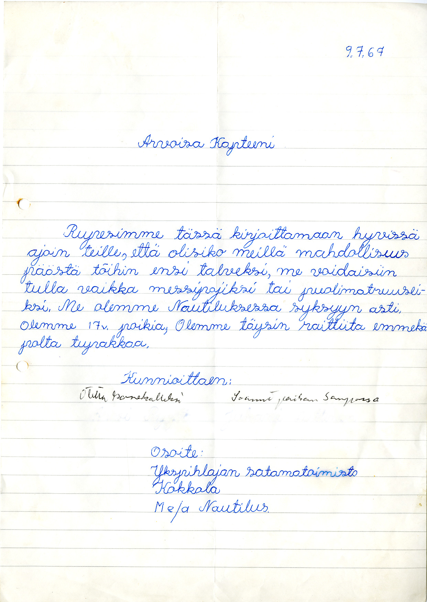
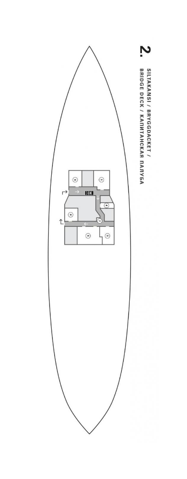

Päälikön toimisto
Jäänmurtajan päällikkö oli usein mukana komentosillalla, varsinkin hankalissa paikoissa.
Lisäksi tehtäviin kuului muiden muassa kansi- ja talouspuolen väen palkkaaminen,
miehistöluettelon ylläpito ja käteiskassan hoito. Aluksen kassassa saattoi olla
suuriakin rahasummia, koska palkat maksettiin käteisenä vielä 1960-luvulla.
Myös emäntä tarvitsi rahaa elintarvikkeiden ostoon. Jäänmurtajien avustustoiminta
oli muuten maksutonta, mutta hinauksesta veloitettiin erikseen ja näistäkin rahoista
vastasi päällikkö.

Heinäkuulta 1967 on säilynyt tämä työhakemus. Hakemus kannatti, sillä toinen pojista
otettiin Tarmolle ”konekalleksi” ja toinen sai paikan jäänmurtaja Sammolta.
